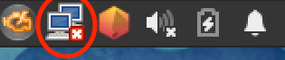

Introduction
This tool will help you finding if your machine is properly configured for your first year at EPITECH
- Hardware recommendation (Memory, Storage, Wireless)
- Webcam
- Audio output (via headset)
- Audio input
At the end you will find a guide to:
- Configure a wireless connexion with the IONIS network
- Install all the packages needed for your first year of coding
- And other stuff
Hardware recommendation
- Wifi ?
- Storage ?
- Memory ?
Webcam
Do you see a video signal from your Webcam ?
Audio output
Plug your headset into your computer and then press "play"
Audio input
Plug your headset into your computer (or keep-it plugged in) press "play" and make some noise. Do your hear the noise you've made ?
Now it's time to connect to the IONIS wireless network
- Open a terminal
- type:
sudo update-crypto-policies --set LEGACY - Find the network applet icon in the top left corner of your screen  then choose the IONIS network
- Configure the network with the correct parameters (cf. Screenshots below)
Install the "dump"
- Go to https://github.com/Epitech-Reunion/dump/archive/refs/heads/master.zip
- Extract the downloaded archive
- Open a terminal in the extracted directory then run
sudo ./install_packages_dump.sh
Here is your report
If everything is OK and the dump is installed: congratulation !
But you might double-check with an AER to be sure